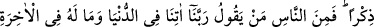
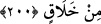

“Eğer üstünüzde Allah’ın fazl ve merhameti olmasaydı içinizden hiçbir kimse asla
temize çıkamazdı.” (en-Nûr, 24/21)
3- Allah’a aid olan fazldır, o da iki çeşittir. Biri kurb ile mânevî yakınlıkla
gerçekleşir. Nitekim “Mü’minleri Allah’dan büyük bir fazl ile müjdele!” (el-Ahzâb,
33/47) âyetindeki “fazl-ı kebîr” tam yakınlık olarak yorumlanmıştır. Çünkü Allah’a tam
yakın olmak dünyâda da âhırette de en büyük ikramdır. Diğeri ise vuslatla ilgili fazl-ı
ilâhîdir. Nitekim “Bu Allah’ın fazlıdır, Onu dilediğine verir. Allah büyük bir fazl
sahibidir.” (el-Hadîd, 57/21; el-Cum’a, 62/4) âyetindeki “büyük fazl” vuslattır. Çünkü
vuslatı ilâhiyye her şeyden değerli ve büyüktür.
Fazlın bu üç çeşidinden herbirinin bir makamı ve ulaşma şekli vardır. Uhrevî işlerle
alâkalı olan ve “rahmet fazlı” denilen fazl-ı ilâhiyyeyi istemenin yolu, mevcûd varlığı
terk için “bezlü’l-mechûd” yâni elden gelen gayreti göstermek; bir bakıma Arafât’a
doğru yürümektir. Vehbî olan fazlı istemenin yolu ve makamı ise Arafât’ta vakfe
durmaktır. Arafât aynı zamanda mârifete de -aynı kökten olduğu için- işarettir. Mârifet
vuslat rükünlerinin en büyüğüdür. Dünyevî işlerle ilgisi olan rızık türü fazl-ı ilâhînin
zaman ve makamı ise mârifet Arafât’ına ulaşıp orada vakfeyi tamamladıktan sonra
gruplar hâlinde halkın içine inme zamanıdır. Tasavvuftaki seyr ü sülûk ifadesiyle Nüzül
ba’de’l-uruc demektir.
Âyette hem takdîm, hem de tehir vardır. “Arafat’tan sel gibi gruplar hâlinde
aktığınızda” ibâresi sülûk ehlinin hâllerinin başlangıcında dünyâyı terkederek ondan
soyutlanmalarını, ortada tevekkül ile Hakk’a yönelmelerini nihayette de mârifet ve
tevhide ermelerini ifâde etmektedir. Dünyevî işlere başlamak ancak nihâyet makamına
ermiş olanlar için sağlıklı olabilir. Çünkü onlar, mârifete ermek ve Allah’ın kalblerini
dünyâ sevgisi kirinden temiz kılması için bir endişe ve kaygı taşımaktadırlar. Hakk’ın
görünmez ilâhî lütuflarla gönüllerini doldurmasını ummaktadırlar. Dünyâ şehvetlerine
ve âhıret nimetlerine aldırmazlar, dünyâ nimetlerine tasarruf kaygıları yoktur. Onların
tasarrufları Allah ile ve Allah içindir, nefis hazları için değil. Düşünce ve çalışmaları
din için ve başkalarına hayır ulaştırmak içindir. Bu ibâreler, et-Te’vîlâtü’n-
Necmiyye’den alınmıştır.
Mesnevî’de der ki:
Kendini iyi ve temizlerle etme kıyas,
İmlâda bir olan kelimeler, mânâda bir olmaz.
Allah Teâlâ bizim himmet ve gayretimizi sadece kendine has kılsın amin.